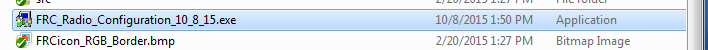
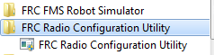
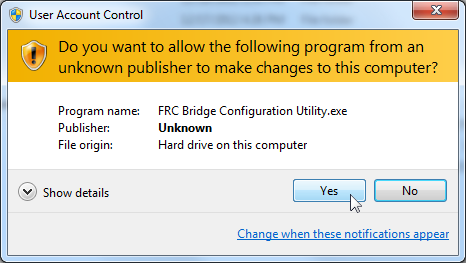
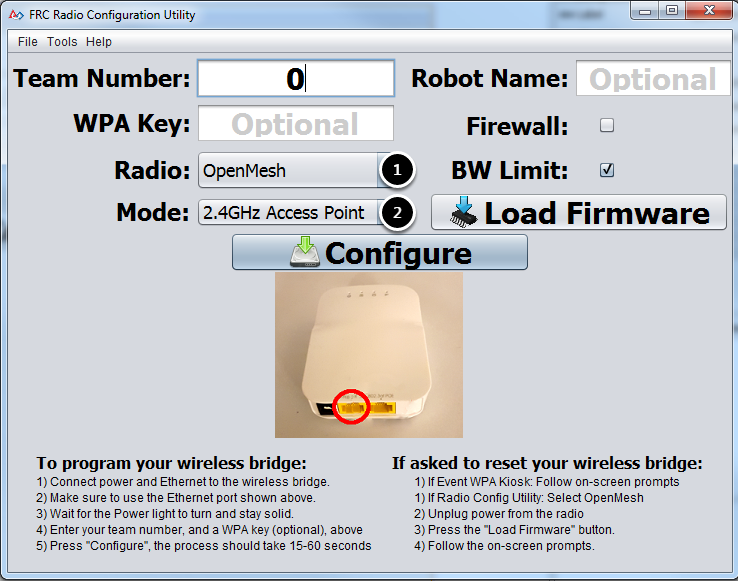
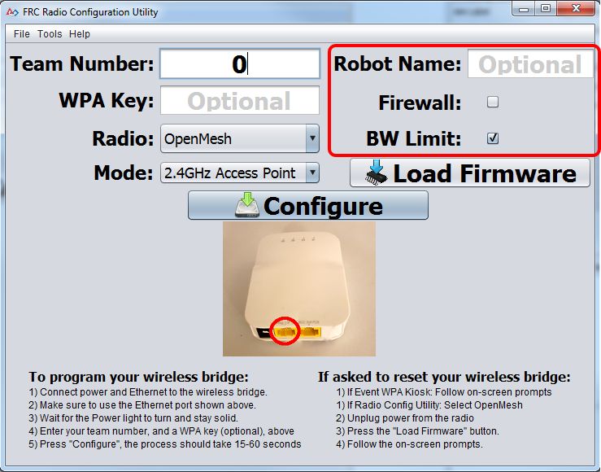

Programming your Radio
This guide will show you how to use the FRC® Radio Configuration Utility software to configure your robot’s wireless bridge for use outside of FRC events.
Prerequisites
The FRC Radio Configuration Utility requires administrator privileges to configure the network settings on your machine. The program should request the necessary privileges automatically (may require a password if run from a non-administrator account), but if you are having trouble, try running it from an administrator account.
Download the latest FRC Radio Configuration Utility Installer from the following links:
FRC Radio Configuration 23.0.2
FRC Radio Configuration 23.0.2 Israel Version
Note
The _IL version is for Israel teams and contains a version of the OM5PAC firmware with restricted channels for use in Israel.
Before you begin using the software:
Plug directly from your computer into the wireless bridge ethernet port closest to the power jack. Make sure no other devices are connected to your computer via ethernet. If powering the radio via PoE, plug an Ethernet cable from the PC into the socket side of the PoE adapter (where the roboRIO would plug in). If you experience issues configuring through the PoE adapter, you may try connecting the PC to the alternate port on the radio.
Warning
The OM5P-AN and AC use the same power plug as the D-Link DAP1522, however they are 12V radios. Wire the radio to the 12V 2A terminals on the VRM (center-pin positive).
Application Notes
By default, the Radio Configuration Utility will program the radio to enforce the 4Mbps bandwidth limit on traffic exiting the radio over the wireless interface. In the home configuration (AP mode) this is a total, not a per client limit. This means that streaming video to multiple clients is not recommended.
The Utility has been tested on Windows 7, 8 and 10. It may work on other operating systems, but has not been tested.
Programmed Configuration
The Radio Configuration Utility programs a number of configuration settings into the radio when run. These settings apply to the radio in all modes (including at events). These include:
Set a static IP of
10.TE.AM.1Set an alternate IP on the wired side of
192.168.1.1for future programmingBridge the wired ports so they may be used interchangeably
The LED configuration noted in the graphic above.
4Mb/s bandwidth limit on the outbound side of the wireless interface (may be disabled for home use)
QoS rules for internal packet prioritization (affects internal buffer and which packets to discard if bandwidth limit is reached). These rules are:
Robot Control and Status (UDP
1110,1115,1150)Robot TCP & NetworkTables (TCP
1735,1740)Bulk (All other traffic). (disabled if BW limit is disabled)
DHCP server enabled. Serves out:
10.TE.AM.11-10.TE.AM.111on the wired side10.TE.AM.138-10.TE.AM.237on the wireless sideSubnet mask of
255.255.255.0Broadcast address
10.TE.AM.255
DNS server enabled. DNS server IP and domain suffix (
.lan) are served as part of the DHCP.
At home only:
SSID may have a “Robot Name” appended to the team number to distinguish multiple networks.
Firewall option may be enabled to mimic the field firewall rules (open ports may be found in the Game Manual)
Warning
It is not possible to modify the configuration manually.
Install the Software
Double click on FRC_Radio_Configuration_VERSION.exe to launch the installer. Follow the prompts to complete the installation.
Part of the installation prompts will include installing Npcap if it is not already present. The Npcap installer contains a number of checkboxes to configure the install. You should leave the options as the defaults.
Launch the software
Use the Start menu or desktop shortcut to launch the program.
Note
If you need to locate the program, it is installed to C:\Program Files (x86)\FRC Radio Configuration Utility. For 32-bit machines the path is C:\Program Files\FRC Radio Configuration Utility
Allow the program to make changes, if prompted
A prompt may appear about allowing the configuration utility to make changes to the computer. Click Yes if the prompt appears.
Select the network interface

Use the pop-up window to select the which ethernet interface the configuration utility will use to communicate with the wireless bridge. On Windows machines, ethernet interfaces are typically named “Local Area Connection”. The configuration utility can not program a bridge over a wireless connection.
If no ethernet interfaces are listed, click Refresh to re-scan for available interfaces.
Select the interface you want to use from the drop-down list.
Click OK.
Open Mesh Firmware Note
For the FRC Radio Configuration Utility to program the OM5P-AN and OM5P-AC radio, the radio must be running an FRC specific build of the OpenWRT firmware.
If you do not need to update or re-load the firmware, skip the next step.
Warning
Radios used in 2019/2020/2021/2022 do not need to be updated before configuring, the 2023 tool uses the same 2019 firmware.
Loading FRC Firmware to Open Mesh Radio
If you need to load the FRC firmware (or reset the radio), you can do so using the FRC Radio Configuration Utility.
Follow the instructions above to install the software, launch the program and select the Ethernet interface.
Make sure the Open Mesh radio is selected in the Radio dropdown.
Make sure the radio is connected to the PC via Ethernet.
Unplug the power from the radio. (If using a PoE cable, this will also be unplugging the Ethernet to the PC, this is fine)
Press the Load Firmware button
When prompted, plug in the radio power. The software should detect the radio, load the firmware and prompt you when complete.
Warning
If you see an error about NPF name, try disabling all adapters other than the one being used to program the radio. If only one adapter is found, the tool should attempt to use that one. See the steps in Disabling Network Adapters for more info.
Teams may also see this error with Operating Systems configured for languages other than US English. If you experience issues loading firmware or programming on a foreign language OS, try using an English OS, such as on the KOP provided PC or setting the Locale setting to “en_us” as described on this page.
Select Radio and Operating Mode
Select which radio you are configuring using the drop-down list.
Select which operating mode you want to configure. For most cases, the default selection of 2.4GHz Access Point will be sufficient. If your computers support it, the 5GHz AP mode is recommended, as 5GHz is less congested in many environments.
Select Options
The default values of the options have been selected to match the use case of most teams, however, you may wish to customize these options to your specific scenario:
Robot Name: This is a string that gets appended to the SSID used by the radio. This allows you to have multiple networks with the same team number and still be able to distinguish them.
Firewall: If this box is checked, the radio firewall will be configured to attempt to mimic the port blocking behavior of the firewall present on the FRC field. For a list of open ports, please see the FRC Game Manual.
BW Limit: If this box is checked, the radio enforces a 4 Mbps bandwidth limit like it does when programmed at events. Note that this is a total limit, not per client, so streaming video to multiple clients simultaneously may cause undesired behavior.
Note
Firewall and BW Limit only apply to the Open Mesh radios. These options have no effect on D-Link radios.
Warning
The “Firewall” option configures the radio to emulate the field firewall. This means that you will not be able to deploy code wirelessly with this option enabled. This is useful for simulating blocked ports that may exist at competitions.
Starting the Configuration Process

Follow the on-screen instructions for preparing your wireless bridge, entering the settings the bridge will be configured with, and starting the configuration process. These on-screen instructions update to match the bridge model and operating mode chosen.
Configuration Progress

Throughout the configuration process, the window will indicate:
The step currently being executed.
The overall progress of the configuration process.
All steps executed so far.
Configuration Completed

Once the configuration is complete:
Press OK on the dialog window.
Press OK on the main window to return to the settings screen.
Configuration Errors

If an error occurs during the configuration process, follow the instructions in the error message to correct the problem.
Troubleshooting
Make sure you wait long enough that the power light has stayed solid for 10 seconds.
Make sure you have the correct network interface, and only one interface is listed in the drop-down.
Make sure your firewall is turned off.
Plug directly from your computer into the wireless bridge and make sure no other devices are connected to your computer via ethernet.
Ensure the ethernet is plugged into the port closest to the power jack on the wireless bridge.
If using an Operating System configured for languages other than US English, try using an English OS, such as on the KOP provided PC or setting the Locale setting to “en_us” as described on this page.
Some users have reported success after installing npcap 1.60. If this doesn’t resolve the issue, it’s recommended to uninstall npcap and the radio tool and then reinstall the radio tool in order to get back to a known configuration.
If all else fails, try a different computer.